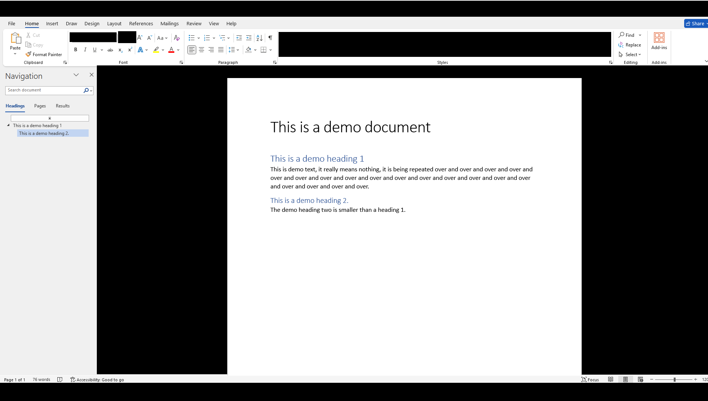

Fixing Black Squares and Flashing Black Screens in Applications That Use Hardware Acceleration
The glitch causes applications that use Hardware Acceleration to have black artefacts, this image is a mock-up as the artifacts do not appear long enough to capture an example.
Introduction
Have you run into problems on Windows 10/ 11 where your screen randomly starts flashing black, you see black squares in videos and when you are browsing the internet, you see black squares in Microsoft Office?
These artefacts only appear for a few seconds at a time and can make you feel like you are going crazy because they are so random and unpredictable, you are not alone if you are experiencing these issues as it is really common on Windows 10/ 11 PCs.
Why you shouldn't disable Hardware Acceleration.
The black screen problem and checkerboard squares are often associated with Hardware Acceleration as these problems are easily fixed by disabling Hardware Acceleration in your application settings.
The problem with disabling Hardware Acceleration is that it can drastically worsen the performance of your computer, especially with regards to graphics-based performance such as video calling, watching videos, etc, therefore I do not consider this to be an actual fix to the problem as it is simply replacing one problem with another.
Multi-Plane Overlay Fix
In Windows 8.1 a feature was introduced called Multi-Plane Overlay (MPO). This feature aims to improve performance by allowing multiple planes to be overlaid, but it can lead to rendering issues in certain situations.
The hardware manufacturer NVIDIA has stated that disabling Multi-Plane Overlay can fix some graphics related issues, I have tested this myself on different computer systems with similar black artifacts and it solved the problems, including a black screen problem on a Lenovo IdeaPad 110-15IBR laptop that rendered it unusable on Windows 11.
View NVIDIA statement on MPO.Registry Fix
Based on the advice provided by NVIDIA Support, it is possible to disable Multi-Plane Overlay, through a registry tweak.
To apply the registry fix, you can download the MPO_Fix.zip file from the webpage linked below, or you can apply the registry tweak manually.
Download Page: Multi-Plane Overlay FixTo disable Multi-Plane Overlay manually you can apply the following registry tweak:
[HKEY_LOCAL_MACHINE\SOFTWARE\Microsoft\Windows\Dwm] "OverlayTestMode"=dword:00000005
To enable Multi-Plane Overlay manually you can apply the following tweak/ delete the 'OverlayTestMode' DWORD :
[HKEY_LOCAL_MACHINE\SOFTWARE\Microsoft\Windows\Dwm] "OverlayTestMode"=-
After applying the tweak via the premade files or manually you, you will need to restart your computer to apply the changes.
Page Updated: 29/05/2024
Page Author: Hackboto